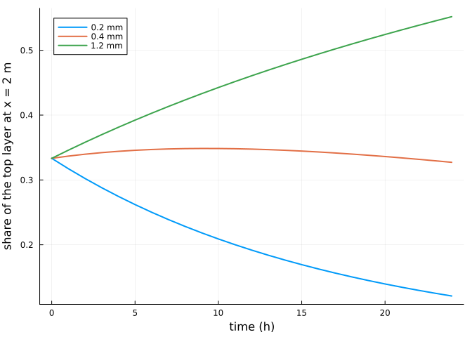
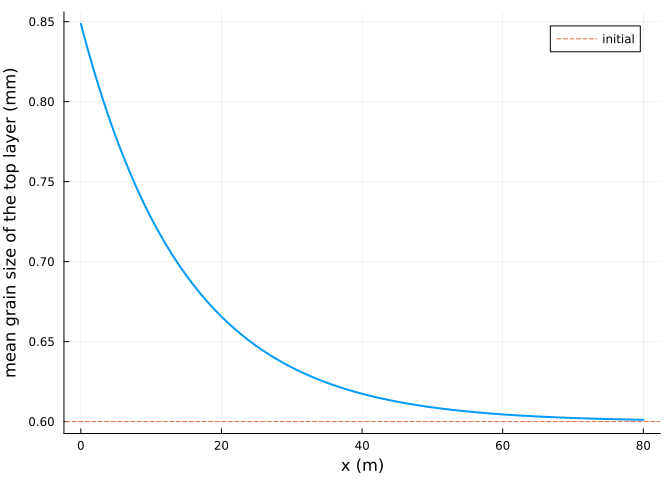
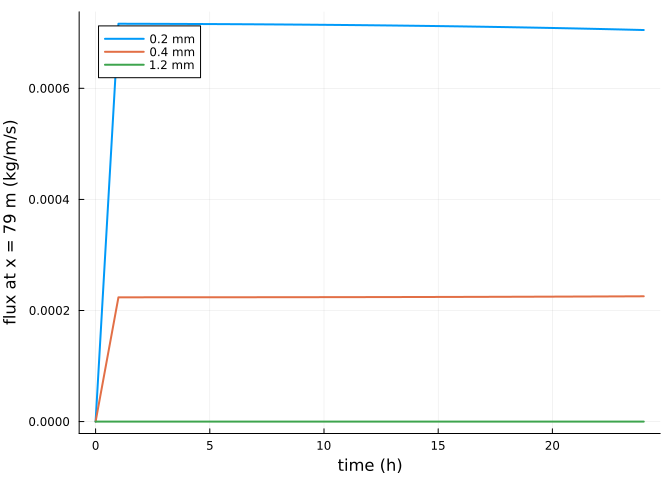
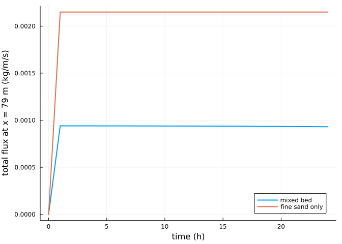

Sediment sorting and armouring
Simon Frost
Overview
A natural beach holds a mixture of grain sizes. AeoLiS represents it with several sediment fractions in a stack of bed layers (Hoonhout and de Vries 2016): fine grains, with a lower threshold, are blown away first, the top layer coarsens, and once it is armoured with grains the wind cannot move, the supply of sand falls even though plenty remains below. This vignette follows that process on a flat transect.
ENV["GKSwstype"] = "100"
using Aeolis
using PlotsA mixed bed
Three fractions of 0.2, 0.4 and 1.2 mm in equal proportions. At a wind speed of 9 m/s the shear velocity exceeds the thresholds of the two finer fractions but not that of the coarsest:
d = [0.0002, 0.0004, 0.0012]
x = collect(0.0:1.0:80.0)
p = AeolisParameters(; xgrid_file=x, bed_file=fill(2.0, length(x)), grain_size=d,
grain_dist=[1 / 3, 1 / 3, 1 / 3], nlayers=5, layer_thickness=0.005,
wind_file=[0.0 9.0 270.0; 86400.0 9.0 270.0], dt=600.0,
tstop=24 * 3600.0, output_times=3600.0,
output_vars=[:zb, :mass, :qs, :uth, :ustar])
sol = solve(AeolisProblem(p))
uth = transect(sol, :uth)[1, :, 2]
ustar = transect(sol, :ustar)[1, 2]
(thresholds=round.(uth; digits=3), ustar=round(ustar; digits=3))(thresholds = [0.175, 0.248, 0.429], ustar = 0.401)The top layer coarsens
The mass of each fraction in the top layer, upwind (x = 2 m), over time:
mass = transect(sol, :mass) # (x, layers, fractions, time)
share = mass[3, 1, :, :] ./ sum(mass[3, 1, :, :]; dims=1)
plot(sol.t ./ 3600, permutedims(share); lw=2, xlabel="time (h)",
ylabel="share of the top layer at x = 2 m",
label=permutedims(["$(1000d[k]) mm" for k in 1:3]))
The mean grain size of the top layer along the transect at the end:
mtop = mass[:, 1, :, end]
dmean = vec(sum(mtop .* permutedims(d); dims=2) ./ sum(mtop; dims=2))
plot(x, 1000 .* dmean; lw=2, xlabel="x (m)", ylabel="mean grain size of the top layer (mm)",
label="")
hline!([1000 * sum(d) / 3]; ls=:dash, label="initial")
Supply falls as the bed armours
The flux of each fraction at the downwind end:
qs = transect(sol, :qs)
plot(sol.t ./ 3600, permutedims(qs[end - 1, :, :]); lw=2, xlabel="time (h)",
ylabel="flux at x = 79 m (kg/m/s)", label=permutedims(["$(1000d[k]) mm" for k in 1:3]))
A bed of fine sand only, with the same threshold-exceeding wind, keeps its supply:
fine = solve(AeolisProblem(remake_parameters(p; grain_size=[0.0002], grain_dist=[1.0])))
plot(sol.t ./ 3600, vec(sum(qs[end - 1, :, :]; dims=1)); lw=2, label="mixed bed",
xlabel="time (h)", ylabel="total flux at x = 79 m (kg/m/s)")
plot!(fine.t ./ 3600, transect(fine, :qs)[end - 1, 1, :]; lw=2, label="fine sand only")
References
Hoonhout, Bas M., and Sierd de Vries. 2016. “A Process-Based Model for Aeolian Sediment Transport and Spatiotemporal Varying Sediment Availability.” Journal of Geophysical Research: Earth Surface 121: 1555–75. https://doi.org/10.1002/2015JF003692.